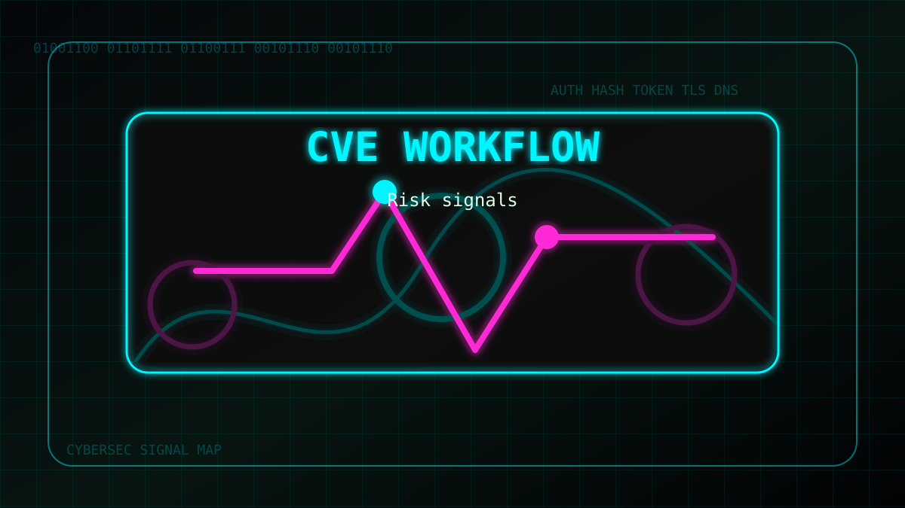
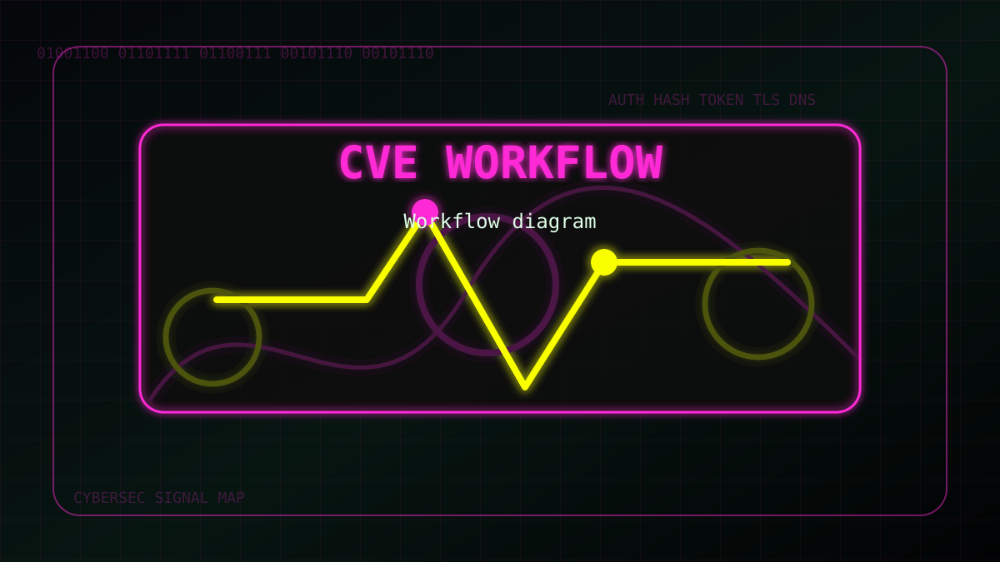

Security work becomes easier when the idea is tied to a repeatable workflow. Start by defining the asset, the threat actor, the likely path of abuse, and the decision you need to make. That framing prevents panic and keeps the investigation focused on evidence instead of noise. It also helps nontechnical teammates understand why a small signal can matter when it connects to identity, money, trust, or access.

Карта ризиків і сигналів
A useful habit is to separate observation from conclusion. Observations are facts you can point to: a domain age, a redirect, a header, a certificate name, a password length, a token claim, a file hash, or an IP reputation signal. Conclusions are the decisions you make after comparing those facts against context. Good security notes preserve both, because the same signal can be harmless in one environment and serious in another.
For individuals, the most valuable improvement is reducing routine exposure. Use unique passwords, enable strong multi factor authentication, keep devices updated, avoid rushing through prompts, and verify sensitive requests through a second channel. These steps are simple, but they remove the easy wins attackers rely on. The goal is not perfection; the goal is to make compromise expensive, visible, and reversible.
For teams, the workflow should be written down. Decide who reviews alerts, how evidence is collected, where screenshots or hashes are stored, and when an incident becomes urgent. A documented flow makes training easier and reduces confusion during stressful moments. It also creates a record that can be improved after each exercise, near miss, or real event.
Tools are most effective when they support judgment rather than replace it. A scanner can highlight a suspicious URL, a hash generator can prove file integrity, a password checker can explain entropy, and a decoder can make token claims readable. None of those outputs should be treated as magic. They are evidence that should be combined with source, timing, user behavior, and business impact.
When reviewing a suspicious item, slow down and preserve the original. Do not forward a risky email casually, do not paste secrets into random websites, and do not upload private files to unknown services. Work locally when possible, copy indicators carefully, and keep sensitive data out of screenshots unless the audience truly needs it. Small handling mistakes can turn a minor question into a larger exposure problem.
Communication matters as much as technical accuracy. A helpful security message explains what happened, what the user should do next, and what they should avoid. Blame makes people hide mistakes; clarity makes them report early. Strong programs treat reports as useful signals and respond with calm instructions, not embarrassment or punishment.
Measure progress with practical metrics. Track how many risky links were reported, how quickly accounts were recovered, whether critical systems have current patches, and how many shared passwords were removed. These measures are imperfect, but they reveal whether behavior is improving. Security culture grows through repeated, visible improvements rather than one dramatic training session.
The best defense is layered. A single control can fail, so pair preventive controls with detection and recovery. Use browser protections, DNS filtering, password managers, MFA, backups, logging, and clear escalation paths. When one layer misses something, another layer should slow the attacker or expose the activity before real damage spreads.
Finally, revisit assumptions. Attack techniques evolve, services change their interfaces, and teams adopt new tools. A guide that was accurate last year can become incomplete. Schedule periodic reviews, test your tools, and keep examples fresh. Cybersecurity is not a static checklist; it is a practice of noticing changes early and turning them into safer habits.
Security work becomes easier when the idea is tied to a repeatable workflow. Start by defining the asset, the threat actor, the likely path of abuse, and the decision you need to make. That framing prevents panic and keeps the investigation focused on evidence instead of noise. It also helps nontechnical teammates understand why a small signal can matter when it connects to identity, money, trust, or access.
A useful habit is to separate observation from conclusion. Observations are facts you can point to: a domain age, a redirect, a header, a certificate name, a password length, a token claim, a file hash, or an IP reputation signal. Conclusions are the decisions you make after comparing those facts against context. Good security notes preserve both, because the same signal can be harmless in one environment and serious in another.
For individuals, the most valuable improvement is reducing routine exposure. Use unique passwords, enable strong multi factor authentication, keep devices updated, avoid rushing through prompts, and verify sensitive requests through a second channel. These steps are simple, but they remove the easy wins attackers rely on. The goal is not perfection; the goal is to make compromise expensive, visible, and reversible.
For teams, the workflow should be written down. Decide who reviews alerts, how evidence is collected, where screenshots or hashes are stored, and when an incident becomes urgent. A documented flow makes training easier and reduces confusion during stressful moments. It also creates a record that can be improved after each exercise, near miss, or real event.
Tools are most effective when they support judgment rather than replace it. A scanner can highlight a suspicious URL, a hash generator can prove file integrity, a password checker can explain entropy, and a decoder can make token claims readable. None of those outputs should be treated as magic. They are evidence that should be combined with source, timing, user behavior, and business impact.
Before closing the workflow, create a short personal checklist and test it against a harmless example. Confirm the source, record the indicator, decide whether the risk is account based, device based, network based, or content based, and choose one next action. That tiny checklist turns the article from reading material into a usable operating habit. Over time, it also gives you a shared vocabulary for explaining suspicious events without drama, confusion, or unnecessary delay.

Практичний робочий процес